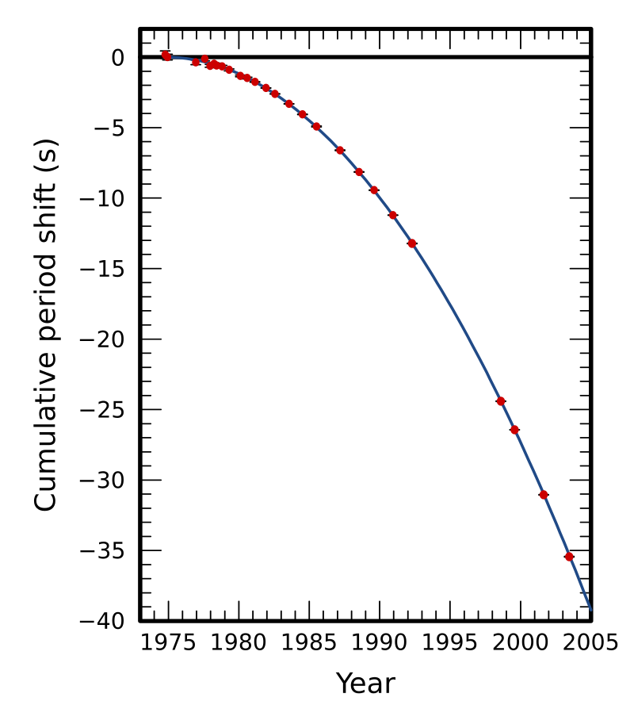

To introduce my research work, I present it through three broader, popular-science-oriented sections. These allow a general contextualization of the scientific projects I have had the pleasure of conducting throughout my career. You will find three main topics:
- Gravitational waves and their detection
- The origin of black holes
- (Upcoming content)
This first page is dedicated to gravitational waves, offering an overview of the field and introducing my related research projects.
A Brief Historical Introduction
Gravitational waves are ripples in spacetime that propagate at the speed of light. They are a direct consequence of Albert Einstein’s theory of general relativity, formulated in 1915 in two foundational papers:
The first publication explicitly describing gravitational waves—“Über Gravitationswellen” (1918)—appeared three years later.

Abstract of the original 1918 article by Albert Einstein
In 1974, Russell Hulse and Joseph Taylor discovered the binary pulsar PSR B1913+16—two orbiting stellar remnants, one of which is a pulsar emitting regular light pulses. In 1979, after four years of observation, they demonstrated that the orbital decay of the system matched the predictions of general relativity, thus confirming the existence of gravitational waves indirectly (1979 publication). They were awarded the Nobel Prize in 1993.
A 2016 update to this work is available here.

Orbital decay of the binary pulsar system. Red points are measurements, closely matching the theoretical curve predicted by general relativity.
The first direct detection of gravitational waves occurred in 2015—exactly 100 years after general relativity. Using the LIGO detectors, scientists observed the merger of two black holes (29 and 36 solar masses).
(Original paper)
In 2017, the Virgo detector in Europe joined the LIGO network, enabling triangulation of gravitational wave sources. On August 17, 2017, the network observed the merger of two neutron stars, simultaneously with electromagnetic signals, marking the beginning of multi-messenger astronomy.
The foundational detection (GW150914) was recognized with the 2017 Nobel Prize in Physics.
As of 2025, the global network includes four detectors: two in the U.S. (LIGO), one in Italy (Virgo), and one in Japan (KAGRA). Together, they have recorded over 100 black hole mergers, enriching our understanding of the universe’s structure and evolution.
Ground-Based Gravitational Wave Detectors
At the time of writing, four operational ground-based interferometers exist:
- LIGO Livingston and LIGO Hanford (USA) – each with 4 km-long arms
- Virgo (Italy) – 3 km-long arms
- KAGRA (Japan) – a 3 km-long underground interferometer

How These Detectors Work
Gravitational waves slightly stretch and squeeze spacetime. On Earth, this is measured using giant Michelson interferometers with kilometer-scale arms. The principle involves detecting phase shifts in laser beams bouncing between mirrors at the ends of the arms. A passing wave causes a tiny differential change in path length, producing interference patterns that can be measured.

Click the image to watch the explicative video on YouTube
Operating Point of an Interferometer
Interferometers are tuned to operate on a dark fringe, meaning destructive interference cancels the signal at the output. This requires real-time feedback control of mirror positions to maintain stability.
In this section, I present my research on modeling and simulating these feedback control loops to keep the interferometer at its operating point.
The Future of Ground-Based Detectors
Two major next-generation projects are currently underway:
Cosmic Explorer (USA)
The Cosmic Explorer collaboration proposes building two new interferometers with arm lengths of 20 to 40 km, dramatically improving sensitivity. This would allow detection of nearly all compact binary mergers in the observable universe.
🔗 Cosmic Explorer website
🖼️ Insert CE image here
Einstein Telescope (Europe)
Europe is preparing the Einstein Telescope (ET), possibly built at one or two sites. Multiple design and location options are still under study.
My work explores the scientific impact of design choices on compact binary detection rates and broader scientific potential.
Pulsar Timing Arrays
Another method of detecting gravitational waves is by monitoring millisecond pulsars. These highly regular signals can exhibit arrival time delays if spacetime is distorted by a passing gravitational wave. By comparing dozens of pulsars, it’s possible to reveal such distortions.
In June 2023, the NANOGrav collaboration announced evidence of a gravitational wave background, possibly generated by supermassive black hole binaries or a population of such systems.
🔗 NANOGrav discovery paper
Space-Based Interferometers
LISA (Laser Interferometer Space Antenna) is an ambitious project led by ESA in collaboration with NASA.
It will consist of three spacecraft placed in a triangle formation orbiting around the Lagrange Point L2, with arms stretching 2.5 million kilometers. This enables exploration of low-frequency gravitational waves, inaccessible from the ground.